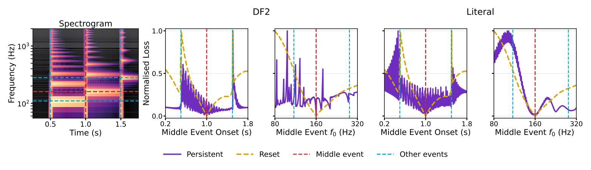

Supplementary Table S1
Onset-placement and propagation screen
Percentage of target-directed BiCuL descent directions in the registered single-event diagnostic (120 non-target points per cell; higher is better). Rows vary onset placement and columns vary fractional-delay propagation. This is an auxiliary, BiCuL-only diagnostic rather than an objective-independent renderer ranking.
| Onset ↓ / propagation → | Linear | Lagrange | Fourier | Thiran |
|---|---|---|---|---|
| Naive | 52.5% | 62.5% | 68.3% | 68.3% |
| Lagrange | 49.2% | 62.5% | 70.0% | 63.3% |
| Fourier | 66.7% | 78.3% | 88.3% | 100.0% |
| Thiran | 65.8% | 79.2% | 99.2% | 99.2% |
Onset placement (rows). Naive continuously samples the analytic excitation; Lagrange uses a fifth-order, six-tap maximally flat FIR shift; Fourier applies the FLAMO phase shift; and Thiran uses a first-order causal all-pass shift.
Propagation (columns). Linear uses first-order interpolation on both rails; Lagrange uses orders 5/1 on the long/short paths; Fourier samples the delay response; and Thiran uses orders 3/1.
Six-loss renderer-sensitivity repeat
Supplementary Table S2 retains the comparison removed from the paper. It repeats the same 120-point direction count with Naive onset placement and Linear propagation. The changing leading objective illustrates why these single-target counts should not be interpreted as a renderer-independent ranking.
| Loss | Fourier–Thiran | Naive–Linear |
|---|---|---|
| L1 | 60.0% | 42.5% |
| L2 | 49.2% | 44.2% |
| MSS | 42.5% | 41.7% |
| SOT | 51.7% | 43.3% |
| TFW2 | 75.8% | 64.2% |
| BiCuL | 100.0% | 52.5% |
Supplementary Figure S1
Persistent and reset state realisations
Full comparison retained outside the paper: a reset-DF2 target spectrogram followed by middle-event BiCuL onset and frequency sweeps for the collapsed DF2 and Literal waveguide realisations. Purple solid curves retain state and yellow dashed curves reset it. In this diagnostic, reset smooths the sweeps and the DF2 and Literal reset curves appear coincident; this contextual observation does not establish equivalence beyond the plotted case.

{kind=link}